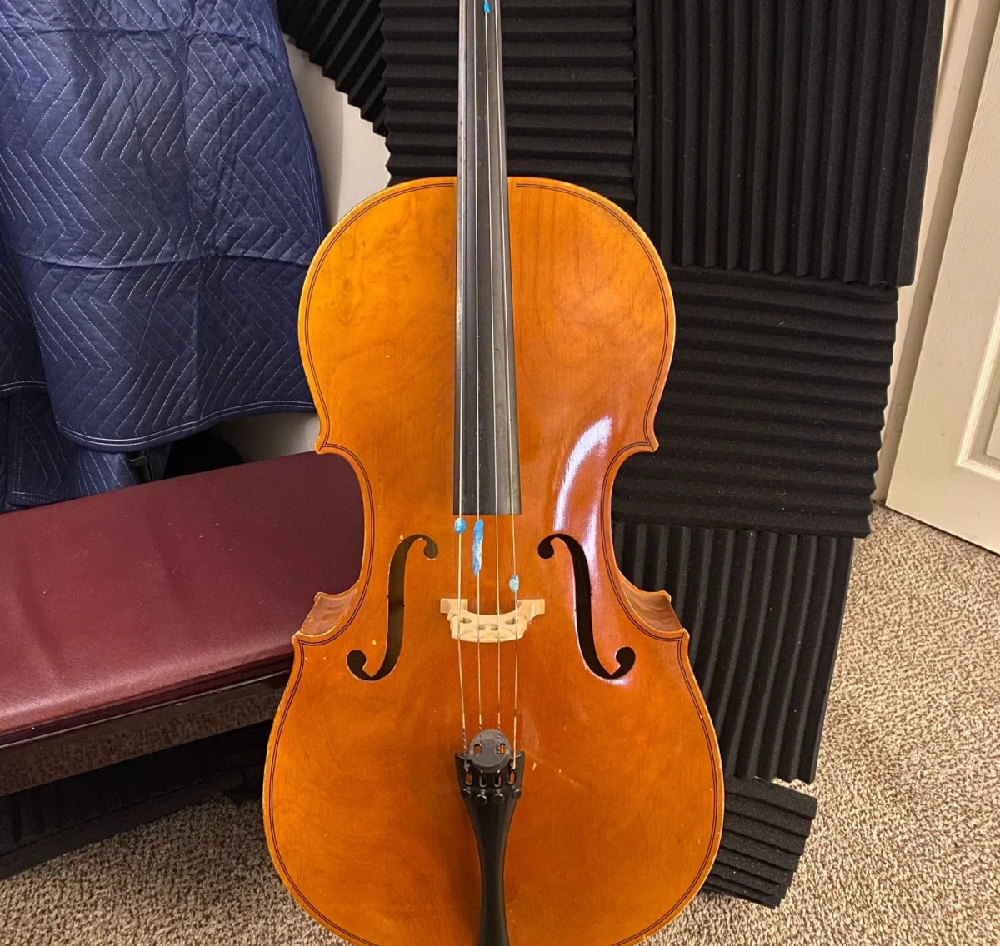

the sum of its parts
2024 · prepared cello, solo · ~10'
written for Johannes Burghoff
This piece is about moving through a gnarly gorgeous soundworld. Sometimes a disciplined walk through the terrain is the piece — provided there remains time and liberty to lean into the sensory experience.
preparation

- I: pretty close to the bridge. bowing tak sounds like a haunted whale
- II. unadorned
- III: BIG long tak. large, unweildy
- IV: about enough tak to lower 1 semitone, with prominent 7th partial
soundworld snapshots
per-string demos recorded while developing the preparation:
- 1 · A+D sul pont
- 2 · A pizz
- 3 · A sul tak
- 4 · A sul pont
- 5 · D pizz
- 6 · D ord
- 7 · D explore
- 8 · G ord
- 9 · G pizz
- 10 · C ord
- 11 · C pizz
- 12 · A tak + D ord → A+D ord
- 13 · G tak
- 14 · C tak
premiere
2024-05-09 · Johannes Burghoff · Peabody Institute, Baltimore, MD